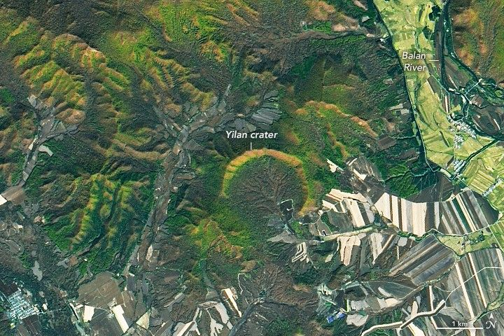

Young Impact Crater Uncovered in Yilan
Impact craters exist on every continent on Earth. While many have eroded away or been buried by geologic activity, some remain visible from the ground and from above. This week, we revisit stories featuring some of our most captivating satellite images of impact sites around the planet. The images and text on this page were originally published on February 27, 2022.
Despite China’s large land area, only one impact crater—the relatively small Xiuyan crater in Liaoning province—had been discovered there prior to 2020. Then, last year, a team of geologists found another crater northwest of Yilan in Heilongjiang Province. The crater was discovered in the heavily forested Lesser Xing’an mountain range, where local residents knew it as “Quanshan,” or “circular mountain ridge.”
The Yilan crater, slightly larger than Xiuyan, spans about 1.85 kilometers (1.15 miles), making it the largest crater on Earth under 100,000 years old. Carbon-14 dating of charcoal and organic lake sediments suggests the crater formed between 46,000 and 53,000 years ago. Meteor (or Barringer) Crater in Arizona is also roughly 50,000 years old, but its diameter is 1.2 kilometers (0.75 miles).
In the image above, acquired by the Operational Land Imager (OLI) on Landsat 8 on October 8, 2021, the scalloped northern rim of Yilan crater is highlighted by fall foliage. The northern rim—which rises 150 meters (500 feet) above the crater floor—is well-preserved, but the southern third of the crater rim is missing.
Although the asteroid that created the crater struck relatively recently in geologic time, the granite rocks it impacted were much older, having formed about 200 million years ago in the Early Jurassic Period. To investigate the impact structure, the research team drilled down 438 meters (1,440 feet) into the center of the crater, where they found hundreds of meters of ancient lake sediments and shattered granite. The team also found unambiguous evidence that the structure was indeed an impact crater, they reported in Meteoritics & Planetary Science. The core revealed shocked quartz, melted granite, glass containing holes formed by gas bubbles, and tear-drop shaped glass fragments—all indications of a high-intensity impact event.
The researchers continue to investigate the cause of the missing southern rim. However, the presence of lakebed sediments inside the crater suggests the rim was intact long enough for significant deposits to build up on the lake bottom. Such deposits often produce rich, organic soil; some farm fields can be seen inside the southern part of the crater. The rest of the crater interior is covered with swamps and forest wetlands.